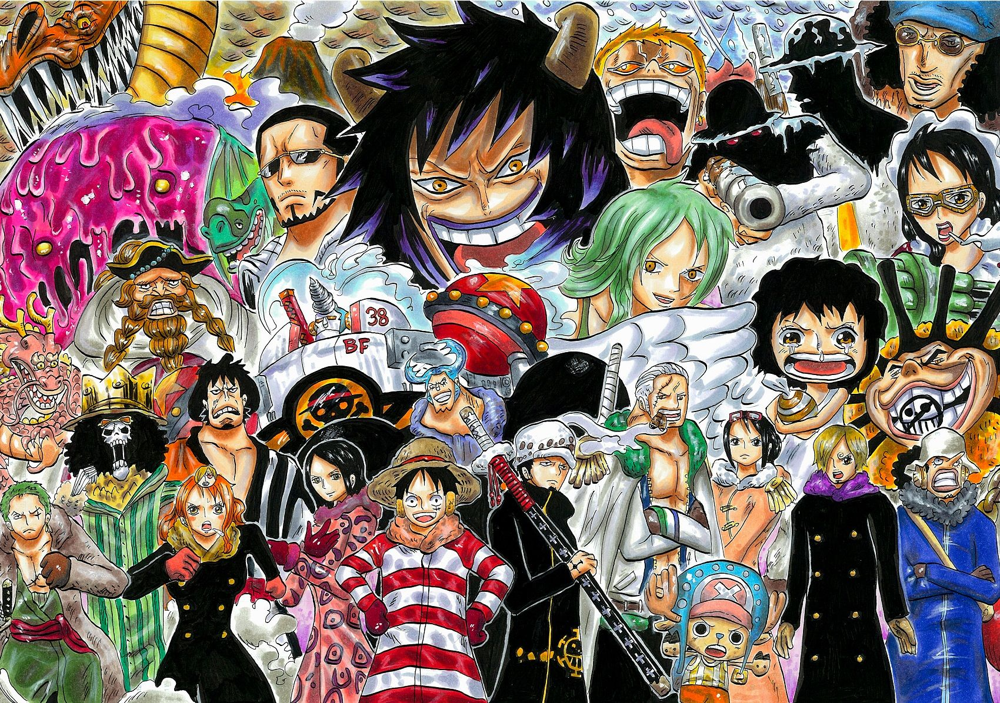

Arc Punk Hazard

La saga Punk Hazard est la troisième saga de la seconde partie de l'histoire de One Piece et commence après que l'équipage de Luffy a quitté l'île des Hommes-Poissons. Lors de leur voyage, ils découvrent une île appelée Punk Hazard qui est couverte de gaz toxiques et où les conditions climatiques sont extrêmement changeantes.
L'équipage découvre également que l'île a été utilisée comme laboratoire secret par le scientifique fou, César Clown, qui y a mené des expériences dangereuses impliquant des enfants.
L'équipage se sépare en deux groupes, avec Luffy et une partie de l'équipage restant sur Punk Hazard pour affronter César Clown, tandis que Sanji, Zoro et une partie de l'équipage partent en quête de l'usine où est fabriquée la drogue "Smile". Au cours de l'arc, ils doivent affronter de nombreux ennemis puissants, dont César Clown et son assistant, Monet, ainsi que les hommes de main de César Clown, les "Sadies".
L'arc culmine avec une bataille épique entre l'équipage de Luffy et les forces de César Clown, qui se révèle être un allié de l'un des quatre Empereurs de la mer, Don Quichotte Doflamingo. Luffy et son équipage parviennent finalement à vaincre César Clown et à mettre fin à son plan diabolique.
Trafalgar Law révèle également son véritable objectif, qui est de renverser Don Quichotte Doflamingo pour venger son passé. L'équipage de Luffy quitte alors l'île de Punk Hazard en direction de Dressrosa pour aider Trafalgar Law dans son entreprise.